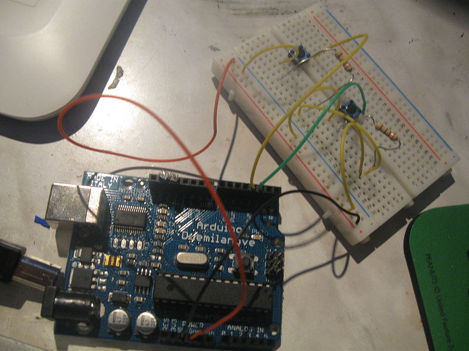
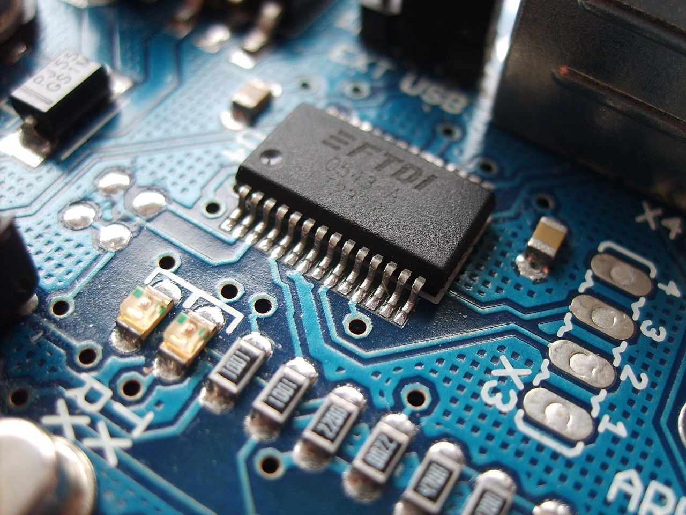
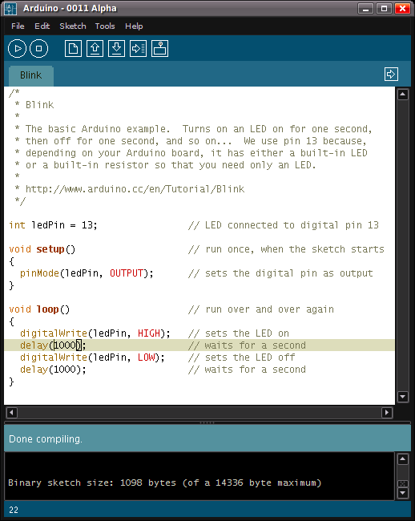

| História | Aplicações | Hardware Oficial | Clones |
HISTÓRIA
O projeto iniciou-se na cidade de Ivrea, Itália, em 2005, com o intuito de interagir em projetos escolares de forma a ter um orçamento menor que outros sistemas de prototipagem disponíveis naquela época. O sucesso foi sinalizado com o obtenção de uma menção honrosa na categoria Comunidades Digitais em 2006, pela Prix Ars Electronica, além da marca de mais de 50.000 placas vendidas até outubro de 2008. Atualmente, o seu hardware é feito através de um microcontrolador Atmel AVR, sendo que este não é um requisito formal e pode ser estendido se tanto ele quanto a ferramenta alternativa suportarem a linguagem arduino e forem aceites pelo seu projeto. Considerando esta característica, muitos projetos paralelos inspiram-se em cópias modificadas com placas de expansões, e acabam recebendo os seus próprios nomes. 1. HARDWARE  Arduino conectado a uma protoboard FTDI acoplado em um Arduino NG A sua placa consiste num microcontrolador Atmel AVR de 8 bits, com componentes complementares para facilitar a programação e incorporação noutros circuitos. Um importante aspecto é a maneira padrão como os conectores são expostos, permitindo o CPU ser interligado a outros módulos expansivos, conhecidos como shields. Os Arduinos originais utilizam a série de chips megaAVR, especialmente os ATmega8, ATmega168, ATmega328 e a ATmega1280; porém muitos outros processadores foram utilizados por clones deles. A grande maioria de placas inclui um regulador linear de 5 volts e um oscilador de cristal de 16 MHz (podendo haver variantes com um ressonador cerâmico), embora alguns esquemas como o LilyPad usem até 8 MHz e dispensem um regulador de tensão embutido, por terem uma forma específica de restrições de fator. Além de ser microcontrolador, o componente também é pré-programado com um bootloader, o que simplifica o carregamento de programas para o chip de memória flash embutido, em comparação com outros aparelhos que geralmente demandam um chip programador externo. Conceptualmente, quando o seu software é utilizado, ele monta todas as placas sobre uma programação de conexão serial RS-232, mas a forma de implementação no hardware varia em cada versão. As suas placas de serie contêm um simples circuito inversor para converter entre os sinais dos níveis RS-232 e TTL. Atualmente, existem alguns métodos diferentes para realizar a transmissão dos dados, como por placas programáveis via USB, adicionadas através de um chip adaptador USB-para-Serial, como o FTDI FT232. Algumas variantes, como o Arduino Mini e o não oficial Boarduino, usam um módulo, cabo adaptador USB, bluetooth ou outros métodos. Nestes casos, são usados com ferramentas microcontroladoras ao invés do Arduino IDE, utilizando assim a programação padrão AVR ISP. A maioria dos pinos de E/S dos microcontroladores são para uso de outros circuitos. A versão Diecimila, que substituiu a Duemilanove, por exemplo, disponibiliza 14 pinos digitais, 6 das quais podem produzir sinais MLP, além de 6 entradas analógicas. Estes estão disponíveis em cima da placa, através de conectores fêmeas de 0,1 polegadas (ou 0,25 centímetros). O modelo Nano, Boarduino e placas compatíveis com estas, fornecem conectores machos na parte de baixo da placa, para serem conectados em protoboards. 2. SOFTWARE Tela do Arduino IDE mostrando um simples programa exemplo O Arduino IDE é uma aplicação multiplataforma escrita em Java derivada dos projetos Processing e Wiring. É esquematizado para introduzir a programação para artistas e para pessoas não familiarizadas com o desenvolvimento de software. Inclui um editor de código com recursos de realce de sintaxe, parênteses correspondentes e identação automática, sendo capaz de compilar e carregar programas para a placa com um único clique. Com isso não há a necessidade de editar Makefiles ou rodar programas em ambientes de linha de comando. Tendo uma biblioteca chamada "Wiring", ele possui a capacidade de programar em C/C++. Isto permite criar com facilidade muitas operações de entrada e saída, tendo que definir apenas duas funções no pedido para fazer um programa funcional: setup() – Inserida no início, na qual pode ser usada para inicializar configuração, e loop() – Chamada para repetir um bloco de comandos ou esperar até que seja desligada. O Arduino IDE usa o Conjunto de ferramentas GNU e o AVR Libc para compilar os programas, para depois, com o avrdude, enviar os programas para a placa. |
|||
| Fonte: Arduino no Wikipedia | Ligações Externas: Página Principal do Arduino [em inglês] - Wiki Arduino [em inglês] | |||